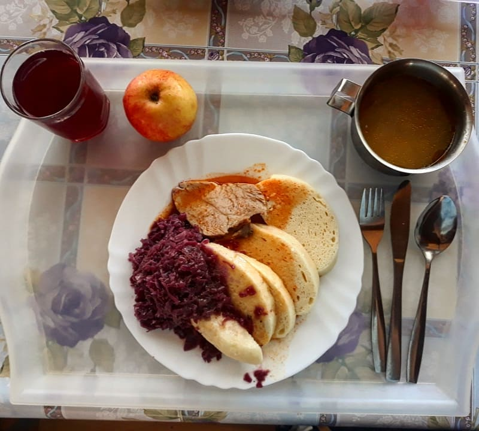

Sedliacka polievka podľa @skolskajedalengt12 — Normy Jedál
Už od začiatku školy obsahuje jedálny lístok iba to najlepšie z najlepšieho, je teda viac než zrejmé, že kolektív ŠJ* vsádza na istotu a ide naplno do toho, čo vie na 350%🔥. Či v tom bude pokračovať, alebo nás prekvapí niečím novým, uvidíme v priebehu nasledujúcich dní 🤔. Máme ale istotu, že hladní neodídeme za žiadnych okolností👩🍳! #veproknedlozelo #knedlik #cabbage #meatandgravy #apple #vitaminovynapoj #sedliackapolievka #schoollunch #foodporn #highgastronomy #yummy #soupinmug *Pomenovanie ,,tety kuchárky" je NEAKTUÁLNE, nakoľko veľkosť mužskej zložky už nie je zanedbateľná!!!